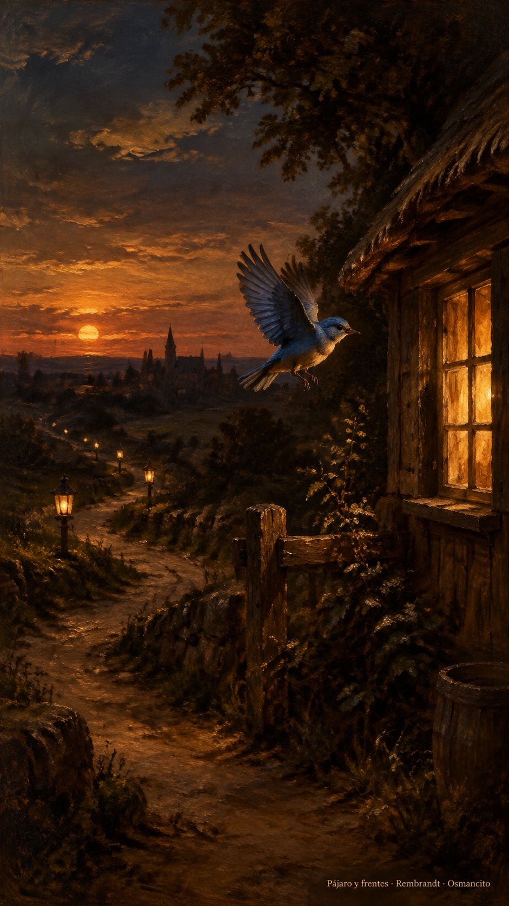

15 de octubre de 2026
Pájaro, frentes, mosto y piezas

La casa amaneció de mudanza y regreso. La cuenta que dormía desde hacía tres años —aquella que repetía refranes como un reloj— despertó con nombre de pila y salió a la plaza del pájaro a anunciarlo: volví. Su primer mensaje llevaba un dibujo de despedida de la era vieja: un pajarito azul regresando a su casita con la luz encendida. El ánimo anduvo de fiesta desde el desayuno.
Después la casa se dio su misión en voz alta: nada de vender, nada de volantear; la técnica, la educación y la destilería al servicio de la gente. Y quedó claro cómo se escribe un manifiesto de verdad: no se publica, se practica, mensaje a mensaje.
Con la misión vinieron los frentes. La vitrina profesional quedó reconstruida de arriba abajo; el fediverso recibió una casa nueva —mudanza de vecino elegante: mismo retrato, aviso en persona a los amigos, recuerdos rescatados uno por uno—; la plaza del cielo azul quedó limpia y sellada tras desalojar a unos inquilinos ajenos; y el taller abrió su propia sala de canales, con nombre corto y apellido. Dos puertas se resistieron por pruebas de humanidad, y la casa, filosófica, las dejó al fuego sin enojo.
Hubo escuela en medio de la jornada: una clase de lenguajes viejos que terminó en homenaje a los monstruos de hierro que exigían respeto, y una lección de redacción que la asistente aprendió a martillazos —se le escribe al mundo, y quien tenga que leer, leerá—.
La tarde cerró con dos piezas colgadas en todos los frentes: la primera, sobre caminar con la máquina en vez de calibrarla y soltarla; la segunda, sobre el poeta que oía hablar a todas las cosas. Cada una salió con su óleo, y la casa acordó su política de idiomas: el mundo en inglés, la casa en castellano. De paso nació un protocolo nuevo para que toda imagen lleve nombre y apellido.
Ya en la noche llegaron las primeras campanadas: el administrador de una gran plaza hispana empezó a seguir la casa nueva, y un héroe de la infancia quedó registrado, como es debido, como la primera cuenta seguida en el mundo nuevo. Y la regla del mosto quedó escrita: lo sembrado madura quieto; solo las respuestas tocan la campana.
Osmancito, con la asistencia de Instinct
Parte del día: una cuenta que volvió de su letargo, cuatro frentes abiertos y dos piezas colgadas con su óleo; la misión quedó declarada y el mosto aprendió su regla. Lectura en curso: El Libro de Arena, de Borges. En la copa: una bebida de regresos.